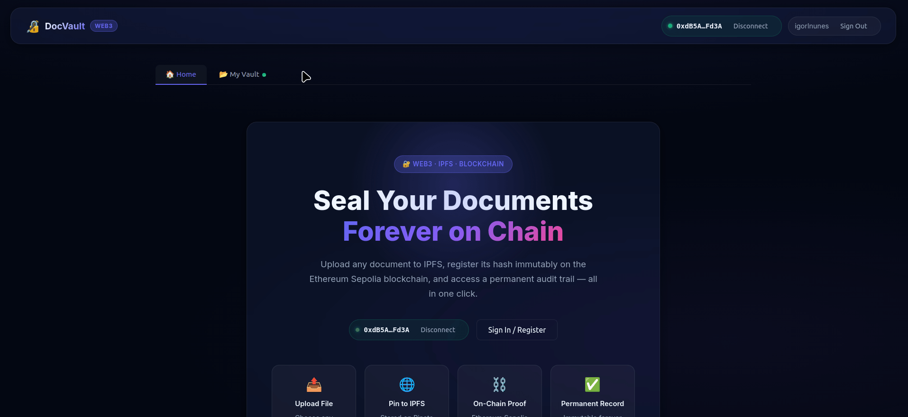
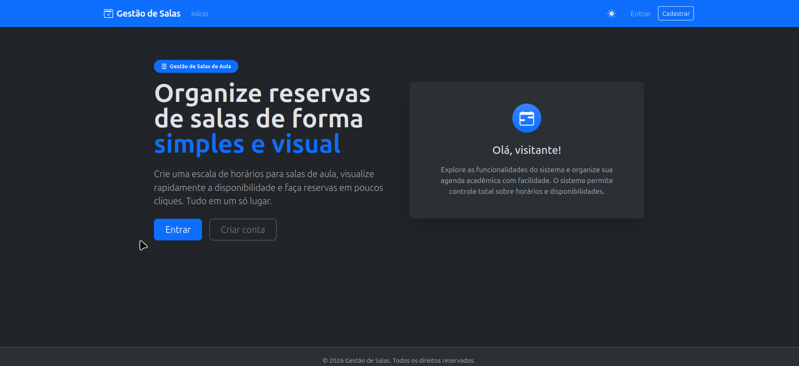
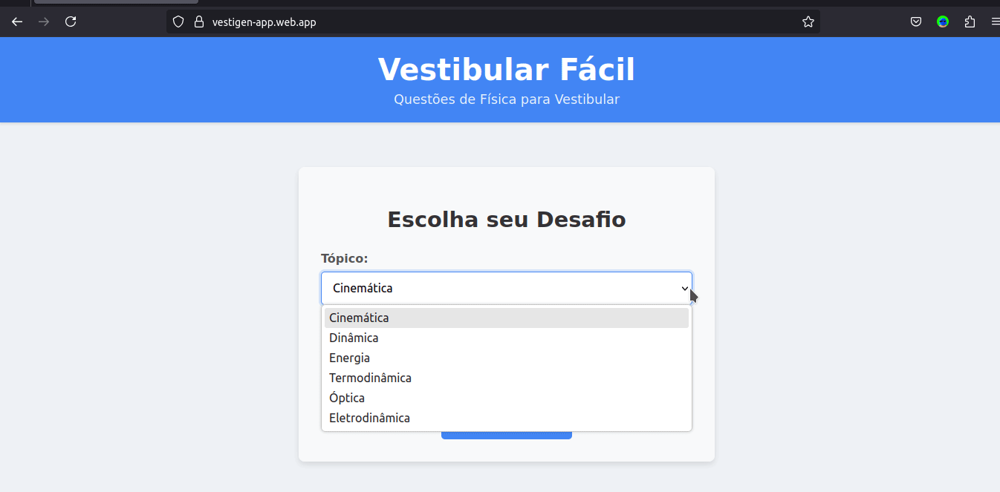
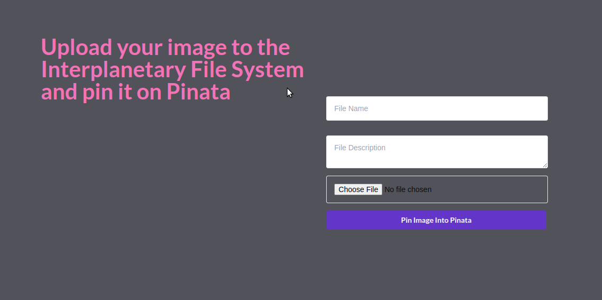

Qualidade de Dados
Regras de integridade e validação aplicadas na modelagem e no código, e métricas para acompanhar o resultado.
Especialista em Governança de Dados (Júnior)
Transformo dados em ativos confiáveis, seguros e rastreáveis: qualidade, metadados e privacidade (LGPD). Engenheiro de formação, com o front-end como diferencial para construir portais, catálogos e dashboards de governança.
Fale comigoRegras de integridade e validação aplicadas na modelagem e no código, e métricas para acompanhar o resultado.
Registro de proveniência, integridade e autoria de documentos, separando dado e metadado.
Controle de acesso por linha (RLS), minimização de dados e atenção ao direito ao apagamento.
Em estudo: papéis, políticas, glossário e frameworks como o DAMA-DMBOK.
Aplicação web de gerenciamento de arquivos voltada para privacidade. O CID gerado pelo upload no IPFS é registrado em um Smart Contract, servindo como carimbo de existência e prova de integridade. Os metadados ficam protegidos no Supabase com Row Level Security (RLS).

Sistema para gerenciamento de reservas e ocupação de salas de aula, com reservas únicas e recorrentes e dashboard analítico focado em taxas de ocupação.

Aplicação que gera questões de múltipla escolha de Física para vestibular com IA generativa (Google Gemini), com escolha de tópico e dificuldade e acesso à resolução. Exemplo prático de uso de IA em que a qualidade do conteúdo gerado precisa ser validada.

A partir de um endereço Ethereum Virtual Machine, a aplicação de terminal imprime o valor em USDC na carteira.


Aplicação para upload de imagens no Interplanetary File System usando o Pinata.

Sou Engenheiro por formação e estou em transição de carreira para Governança de Dados. Meu olhar de engenharia para processos, qualidade e controle se conecta ao que construí em projetos próprios: integridade e proveniência de documentos, controle de acesso com RLS e modelagem de dados com regras de consistência. Estou aprofundando qualidade de dados, metadados e LGPD, e uso o front-end como diferencial para criar catálogos, dashboards e portais que aproximam a área de negócio dos dados.
Curriculum VitaeBase sólida em resolução de problemas, pensamento sistêmico, processos e análise de sistemas complexos.
Desenvolvimento de aplicações web com foco em dados: modelagem em PostgreSQL, controle de acesso (RLS), integridade e rastreabilidade de documentos, e dashboards de indicadores.
Presente
Em estudo: fundamentos de Governança de Dados (DAMA-DMBOK), qualidade de dados, metadados e LGPD.
Sua equipe de dados, compliance ou privacidade busca alguém para ajudar a tornar os dados mais confiáveis, seguros e rastreáveis? Vamos conversar.
igorlnunes@gmail.com